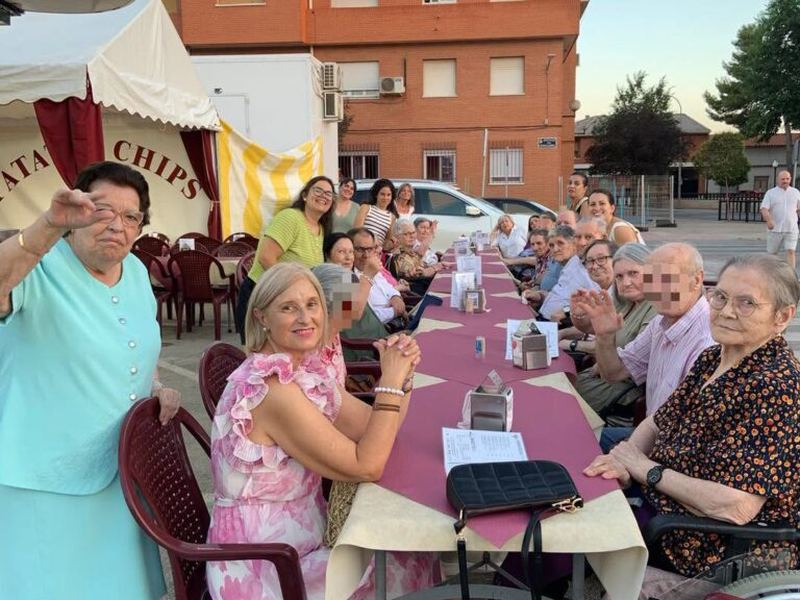
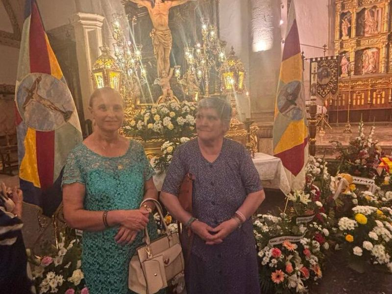
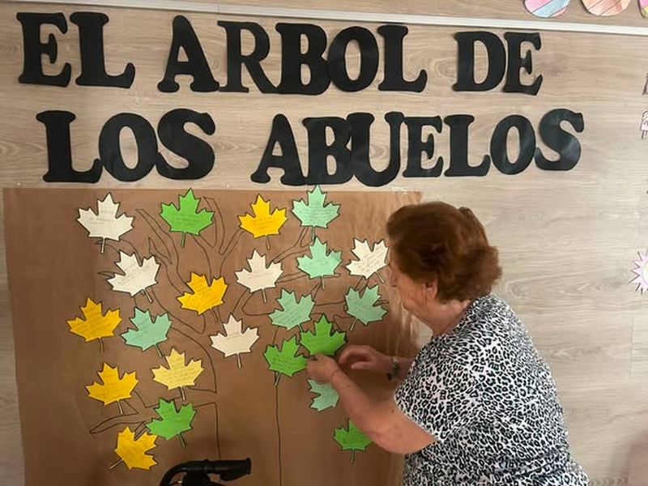

Complejo Residencial “Ntra. Sra. del Carmen” · Socuéllamos
Nos gusta cuidarte.
Trabajamos para que los cuidados lleguen donde más se necesita, con profesionalidad, respeto y calidez humana.
La Fundación
Un legado de Carmen Arias al pueblo de Socuéllamos.
Dña. Carmen Arias cedió todos sus bienes al pueblo de Socuéllamos. Así nació en 1986 la Fundación Carmen Arias, una entidad sin ánimo de lucro al servicio de la localidad.
Hoy atendemos a personas mayores, a adultos jóvenes con daño cerebral sobrevenido y a personas adultas con problemas de salud mental, con una atención de calidad y calidez, personalizada.
Nuestra historia
- 1986Nace la Fundación Carmen Arias
- 1992Abre la Residencia “Ntra. Sra. del Carmen”
- 2008Módulo de Daño Cerebral Sobrevenido
- 2012Servicio de Ayuda a Domicilio
- 2013Centro de Día y ampliación de plazas
- 2015SEPAP
- 2018Plazas para personas con problemas de salud mental
Nuestros centros
Cada persona necesita un apoyo distinto. Por eso la Fundación se organiza en centros y servicios especializados.
Residencia Ntra. Sra. del Carmen
Instalaciones amplias y modernas y un equipo multidisciplinar: enfermería, medicina, fisioterapia, terapia ocupacional, logopedia e integración social.
146 plazasDaño Cerebral Sobrevenido
Módulo para personas jóvenes, en un entorno sin barreras, con rehabilitación funcional e integración social.
Desde 2008Salud Mental
Plazas residenciales permanentes con la Fundación Sociosanitaria de Castilla-La Mancha, plenamente integradas en la vida del centro.
Desde 2018Centro de Día
Fisioterapia, terapia ocupacional y animación sociocultural para mantener la autonomía y volver a casa cada tarde.
40 plazasSEPAP
Servicio de Promoción de la Autonomía Personal, para seguir viviendo en el propio hogar el mayor tiempo posible.
65 plazasAyuda a Domicilio
Con el Ayuntamiento de Socuéllamos desde 2012. 30 auxiliares cuidan a cada persona en su propia casa.
+100 personasFormación
Ciclo de Grado Medio de Atención a Personas en Situación de Dependencia, en formación dual con el I.E.S. Fernando de Mena.
FP Dual
Sábete, Sancho, que no es un hombre más que otro si no hace más que otro.
Últimas noticias
Ver todas
Inauguración de la Feria y Fiestas de Socuéllamos

Participación en la Novena del Santísimo Cristo de la Vega

Actividades para conmemorar el «Día de los Abuelos»
En WordPress, esta sección mostrará siempre las 3 últimas entradas que publiquéis.
Contacto
Ven a conocernos.
- Dirección
- C/ Bonillo 106, 13630 Socuéllamos (Ciudad Real)
- Teléfono
- 926 530 612
- Fax
- 926 539 000
- info@carmenarias.es